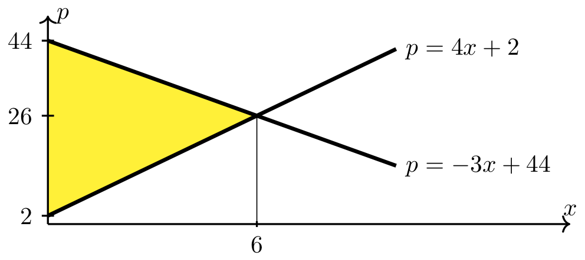

Consumer, Producer, & Total Surplus#
Consumer & Producer Surplus#
Definition
Consumer surplus is the difference between what customers are willing to pay for a product and what they actually pay.
For a given demand function, \(D(x)\), if \(\bar{x}\) is the quantity demanded and \(\bar{p}\) is the corresponding unit market price, then consumer surplus, \(CS\), is given by:
Geometric Interpretation of Consumer Surplus
Consumer surplus can also be interpreted as the area of the region between the demand curve and the horizontal line \(p=\bar{p}\) on the interval \([0,\bar{x}]\).
{kind=link}
Fig. 13 Consumer surplus#
Long Text Description
There is a horizontal x axis with the point x bar marked. There is a vertical p axis with the point p bar marked. There is a decreasing, concave up curve plotted above the x-axis, labeled p = D(x). There is a vertical line from the point x bar that meets a horizontal line from the point p bar along this curve. The region between the curve, the horizontal line from p bar, and the p axis is shaded yellow and labeled “Consumer Surplus”
Definition
Producer surplus is the difference between what sellers receive for their product and what they are willing to receive.
For a given supply function, \(S(x)\), if \(\bar{x}\) is the quantity demanded and \(\bar{p}\) is the corresponding unit market price, then producer surplus, \(PS\), is given by:
Geometric Interpretation of Producer Surplus
Producer surplus can also be interpreted as the area of the region between the supply curve and the horizontal line \(p=\bar{p}\) on the interval \([0,\bar{x}]\).
{kind=link}
Fig. 14 Producer surplus#
Long Text Description
There is a horizontal x axis with the point x bar marked. There is a vertical p axis with the point p bar marked. There is an increasing, concave up curve plotted above the x-axis, labeled p = S(x). There is a vertical line from the point x bar that meets a horizontal line from the point p bar along this curve. The region between the curve, the horizontal line from p bar, and the p axis is shaded yellow and labeled “Producer Surplus”
Example 1#
Determining surplus at market equilibrium using geometry
The demand function for Penn State Learning’s Calculus on Demand video series is \(p = D(x) = -3x+44\) and the corresponding supply function is \(p=S(x) = 4x+2\). Determine the consumer and producer surplus at the market equilibrium values by finding the area of the corresponding region between two curves.
Step 1: Find the market equilibrium values.
Therefore, the equilibrium quantity is \(\bar{x} = 6\) and the equilibrium price is
Step 2: Calculate the consumer surplus.
Consumer surplus at the market equilibrium is the area of the region between the demand curve, \(p=-3x+44\), and the horizontal line \(p = 26\) on the interval \([0,6]\).
Since the above region is a triangle, its area (i.e., the consumer surplus) can be calculuated using the formula for the area of a triangle (i.e., \(\frac{1}{2}\cdot\hbox{base} \cdot \hbox{height}\)).
{kind=link}
Long Text Description
There is a horizontal x axis with the point x=6 marked. There is a vertical p axis with the points 2, 26, and 44 marked. The increasing line with p-intercept 2: p=4x+2 is plotted on these axes. The decreasing line with p-intercept 44: p = -3x+44 is plotted on these axes. There is a horizontal line p = 26 which meets both plotted lines and the vertical line x = 6 at the point (6,26). The region between the horizontal line p=26, the decreasing line p=-3x+44, and the p axis is shaded yellow.
Step 3: Calculate the producer surplus.
Producer surplus at the market equilibrium is the area of the region between the supply curve, \(p=4x+2\), and the horizontal line \(p = 26\) on the interval \([0,6]\).
Since the above region is a triangle, its area (i.e., the producer surplus) can be calculuated using the formula for the area of a triangle (i.e., \(\frac{1}{2}\cdot\hbox{base} \cdot \hbox{height}\)).
{kind=link}
Long Text Description
There is a horizontal x axis with the point x=6 marked. There is a vertical p axis with the points 2, 26, and 44 marked. The increasing line with p-intercept 2: p=4x+2 is plotted on these axes. The decreasing line with p-intercept 44: p = -3x+44 is plotted on these axes. There is a horizontal line p = 26 which meets both plotted lines and the vertical line x = 6 at the point (6,26). The region between the horizontal line p=26, the increasing line p=4x+2, and the p axis is shaded yellow.
Total Surplus#
Definition
Total surplus is the sum of the consumer and the producer surpluses.
For given demand and supply functions, \(D(x)\) and \(S(x)\), if \(\bar{x}\) is the quantity demanded, then total surplus, \(TS\), is given by:
Geometric Interpretation of Total Surplus
Total surplus can also be interpreted as the area of the region between the demand curve and the supply curve on the interval \([0,\bar{x}]\).
Total surplus is maximized at the equilibrium quantity.
{kind=link}
Fig. 15 Total surplus#
Long Text Description
There is a horizontal x axis with the point x bar marked. There is a vertical p axis. The increasing, concave up curve p = S(x) is plotted. The decreasing, concave up curve p = D(x) is plotted. There is a vertical beginning x bar and meeting both curves directly above it. The two curves meet slightly to the right of the vertical line at x bar. The region between the curve p = S(x), the vertical line at x bar, the curve p = D(x), and the p axis is shaded yellow and labeled “Total Surplus”.
Example 2#
Determining total surplus
Continuing with Example 1, determine the total surplus at the equilibrium quantity by finding the area of the corresponding region between two curves.
Step 1: Calculate the total surplus.
Total surplus at the market equilibrium is the area of the region between the demand curve, \(p=-3x+44\), and the supply curve, \(p=4x+2\), on the interval \([0,6]\).
{kind=link}
Long Text Description
There is a horizontal x axis with the point x=6 marked. There is a vertical p axis with the points 2, 26, and 44 marked. The increasing line with p-intercept 2: p=4x+2 is plotted on these axes. The decreasing line with p-intercept 44: p = -3x+44 is plotted on these axes. There is a vertical line x = 6 which meets both plotted lines at the point (6,26). The triangular region between the line p = 4x+2, p = -3x + 44, and the p axis is shaded yellow.
Since the above region is a triangle, its area (i.e., the total surplus) can be calculuated using the formula for the area of a triangle (i.e., \(\frac{1}{2}\cdot\hbox{base} \cdot \hbox{height}\)).
The total surplus can also be calculated as the sum of the consumer and producer surpluses that were calculated in Example 1.
Example 3#
Determining surplus using integration
The quantity demanded for computer chips is given by
where \(x\) is the quantity demanded (in hundreds of chips per week), and \(p\) is the price of a single chip (in dollars). The manufacturer will make \(x\) units available to the market each week if
Determine the consumer and producer surplus at the market equilibrium values.
Step 1: Find the market equilibrium values.
Therefore, the equilibrium quantity is \(\bar{x} = 10\) and the equilibrium price is
Step 2: Calculate the consumer surplus.
Recall the formula for consumer surplus:
Since the units of \(x\) are hundreds of chips and \(p\) is the price of a single chip we need to multiply this result by \(100\) to correctly interpret the consumer surplus in dollars. Therefore, the consumer surplus is
Step 3: Calculate the producer surplus.
Recall the formula for producer surplus.
Since the units of \(x\) are hundreds of chips and \(p\) is the price of a single chip we need to multiply this result by \(100\) to correctly interpret the producer surplus in dollars. Therefore, the producer surplus is
Example 4#
Determining surplus using integration
The supplier of a custom pen will make \(x\) units of pens available to the market when the wholesale unit price is \(p = \sqrt{9+2x}\) where \(p\) is in dollars. Determine the producer surplus when the market unit price is set to $5 a unit.
Step 1: Determine the quantity supplied when the market price is $\(5\).
Step 2: Setup the producer surplus as a definite integral.
Step 3: Evaluate \(\displaystyle \int_0^{8} (9+2x)^{1/2} ~dx\) using substitution.
Use \(u-\)substitution
Compute the new limits of integration using the equation \(u = 9+2x\).
Evaluate the integral.
Step 4: Complete the computations for the producer surplus.
Therefore, the producer surplus is approximately $7.33 when the unit price is $5.